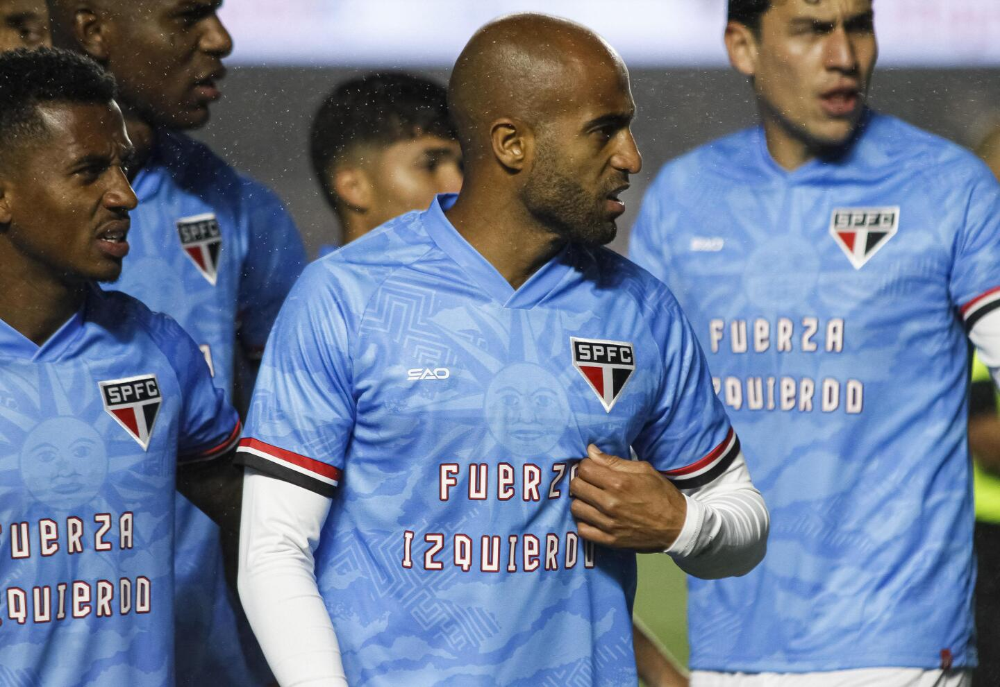

Faça suas orações por Juan Izquerdo!
Juan Izquierdo era um jogador de futebol uruguaio,que defendia as cores do Nacional-URU, o futebolista tinha 27 anos. Ele teve uma parada cardica no jogo pela libertadores contra o Sao Paulo no Morumbis, o jogador foi encaminhado rapidamente para o hospital Albert Einstein onde ficou 6 dias internado e veio a obito na noite de terça-feira

FUTEBOL ESTA EM LUTO
Descanse em paz